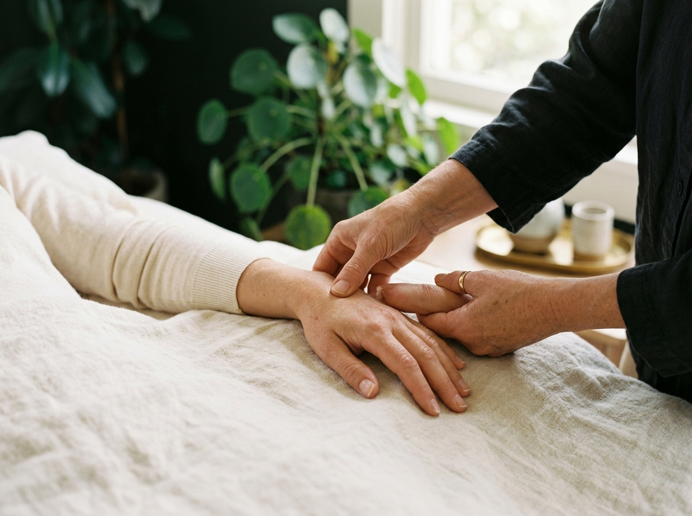
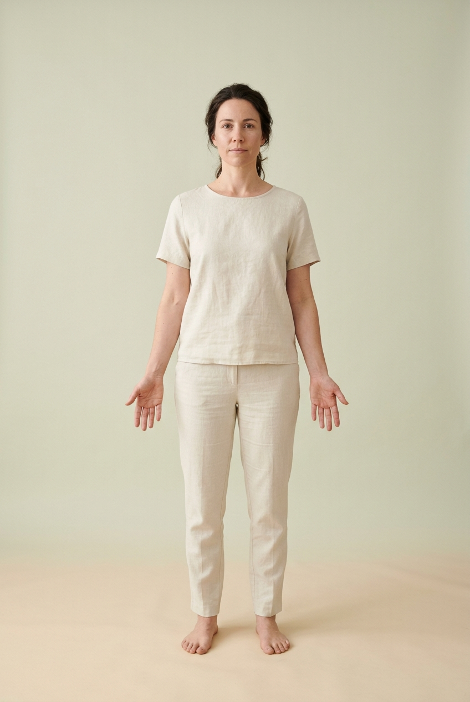

Touch-based practice
Acupressure
Learn about the use of gentle, targeted pressure as a complementary wellbeing practice.
How it works
Explore complementary therapies in a calm setting—understand each session, ask questions and choose at your pace.

Every person arrives with a different story. We begin by understanding what you hope to address, explaining possible approaches and making room for your questions.
Learn about the use of gentle, targeted pressure as a complementary wellbeing practice.
How it works
A guided session focused on pressure applied to areas of the feet or hands.
Explore practiceUnderstand cupping, Sujok, auricular approaches and the questions to ask first.
View all therapiesWe aim to explain what a therapy can and cannot claim, who should seek medical advice first, and how to discuss your needs with a qualified practitioner.
Read the wellbeing guideShare your goals and concerns.
Know what a session involves.
Consent and comfort matter.
Medical care comes first when needed.
Knowing how an appointment unfolds helps take away uncertainty before you arrive.
Discuss what brought you in, any relevant medical history, and what you hope to feel more comfortable with.
Review what areas will be worked on, agree on comfortable pressure levels, and confirm any precautions to avoid.
Take a quiet moment after the session to check how you feel and review simple hydration or rest guidance.
This simple interactive illustration is an educational starting point, not a diagnostic tool or a treatment map. Select a point to read a general description.
Choose one of the markers on the illustration.

Complementary care works best when expectations stay grounded and medical priorities remain clear.
Tell us what you are looking for and request a time to speak with the centre.